×
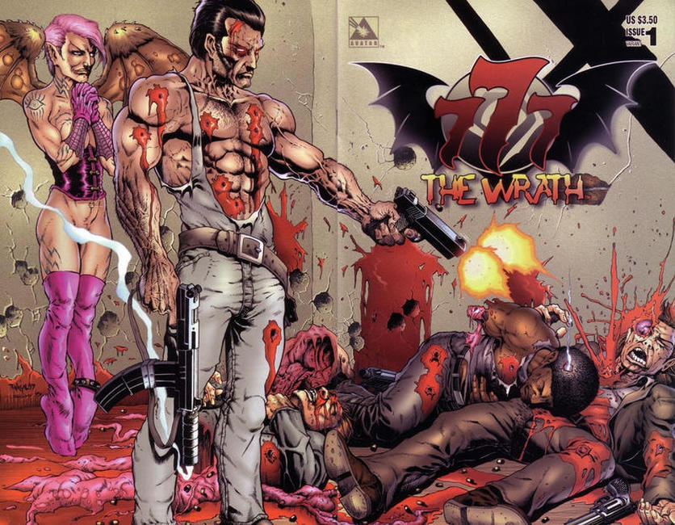
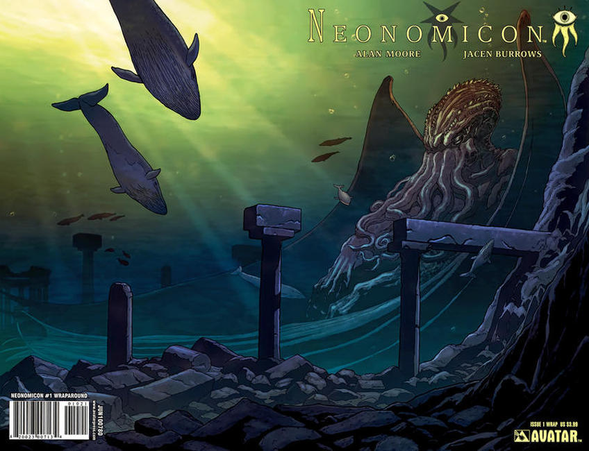
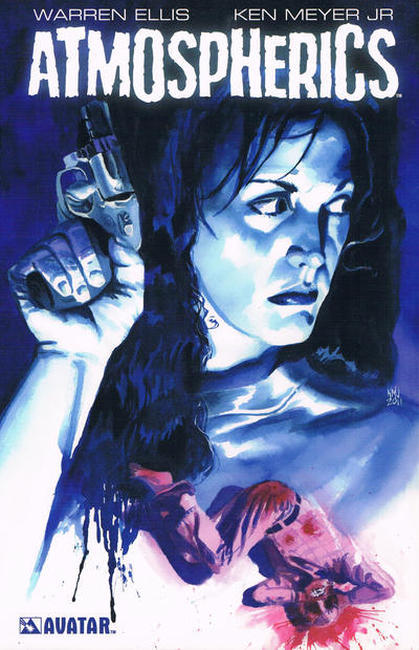
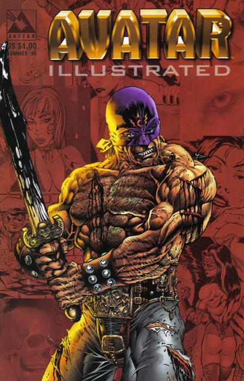
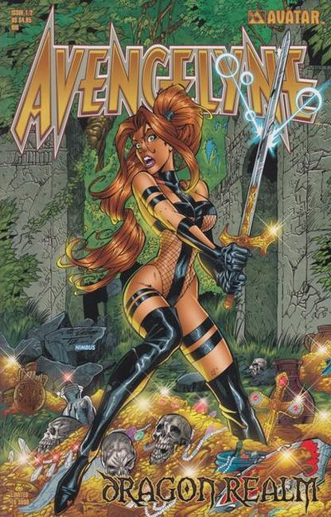
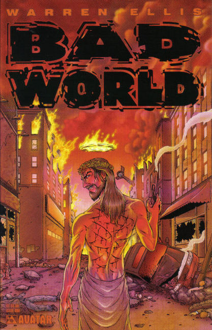
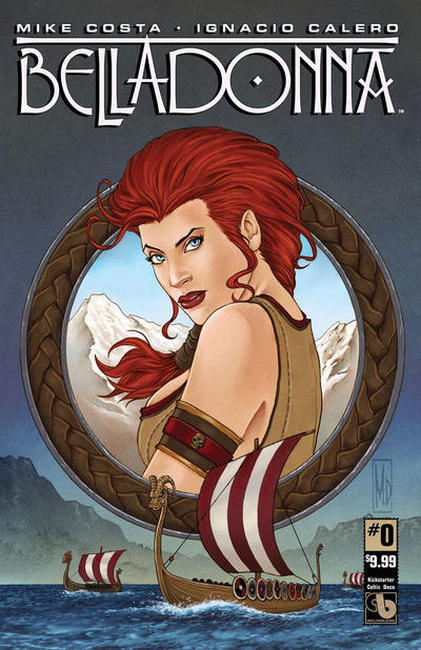
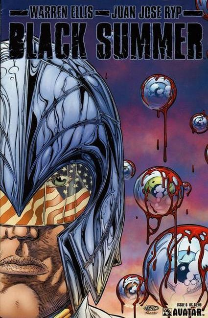
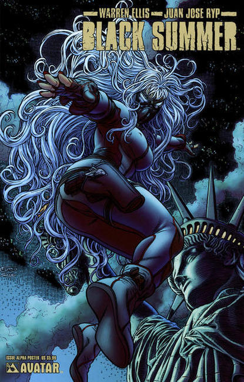
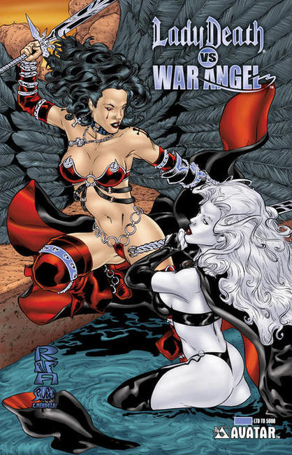
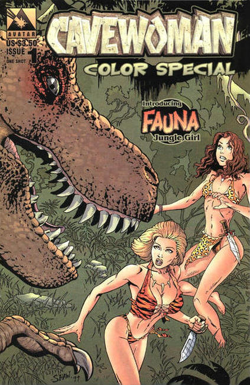
❮
❯
Avatar Press is an independent American comic book publisher founded in 1996 by William A. Christensen, and based in Rantoul, Illinois. Avatar Press is most notable for publishing Bad Girl comics, such as Faust, Pandora, Hellina, Lookers, The Ravening, and Brian Pulido's Lady Death. Such comics are currently published under the "Boundless Comics" imprint.
Avatar has a strong web presence, anchored by Warren Ellis' FreakAngels webcomic, as well as the comics news site Bleeding Cool, helmed by Rich Johnston.
Titles
10th Muse (2002)
10th Muse / Demonslayer (2002)
2001 Maniacs Hornbook (2007)
2001 Maniacs Special (2007)
777: The Wrath (1998)
Absolution (2009)
Absolution: Rubicon (2013)
Absolution: The Beginning (2013)
Aetheric Mechanics (2008)
Al Rio's Ana: Jungle Girl (2000)
Alan Moore's Another Suburban Romance (2003)
Alan Moore's Cinema Purgatorio (2016)
Alan Moore's Glory (2001)
Alan Moore's Hypothetical Lizard (2005)
Alan Moore's Light of Thy Countenance (2009)
Alan Moore's Magic Words (2002)
Alan Moore's Neonomicon (2010)
Alan Moore's Neonomicon Hornbook (2009)
Alan Moore's The Courtyard (2003)
Alan Moore's The Courtyard TPB (2004)
Alan Moore's Yuggoth Cultures and Other Growths (2003)
Allura Nudes (1999)
Allura Special (1998)
Ana, Jungle Girl (2000)
Angel Stomp Future (2004)
Anna Mercury (2008)
Anna Mercury 2 (2009)
Anna Mercury: Prepare for Launch (2008)
Apparat (2005)
Atlas (2002)
Atmospherics (2011)
Atmospherics Graphic Novel (2002)
Avatar Illustrated (1998)
Avatars (1998)
Avengelyne Convention Special (2001)
Avengelyne Demonslayer (2000)
Avengelyne Pandora (2000)
Avengelyne/Shi (2001)
Avengelyne: Bad Blood (2000)
Avengelyne: Dark Depths (2001)
Avengelyne: Dragon Realm (2001)
Avengelyne: Revelation (2001)
Avengelyne: Revelation Prelude (2000)
Avengelyne: Seraphicide (2001)
Back In Black: Brian Pulido Unleashed At Avatar (2004)
Bad Moon Rising (2006)
Bad World (2001)
Belladonna (2015)
Belladonna: Fire and Fury (2017)
Black Summer (2007)
Black Summer Alpha (2007)
Black Tide (2002)
Black Tide: The Story So Far (2003)
Brian Pulido's Belladonna (2004)
Brian Pulido's Gypsy (2005)
Brian Pulido's Killer Gnomes (2004)
Brian Pulido's Lady Death Leather & Lace (2005)
Brian Pulido's Lady Death vs War Angel (2006)
Brian Pulido's Lady Death: 10th Anniversary (2004)
Brian Pulido's Lady Death: 2005 Bikini Special (2005)
Brian Pulido's Lady Death: 2006 Fetishes Special (2006)
Brian Pulido's Lady Death: Abandon All Hope (2005)
Brian Pulido's Lady Death: Annual (2006)
Brian Pulido's Lady Death: Art of Juan Jose Ryp (2007)
Brian Pulido's Lady Death: Blacklands (2006)
Brian Pulido's Lady Death: Dark Horizons (2006)
Brian Pulido's Lady Death: Dead Rising (2004)
Brian Pulido's Lady Death: Infernal Sins (2006)
Brian Pulido's Lady Death: Lost Souls (2006)
Brian Pulido's Lady Death: Masterworks (2007)
Brian Pulido's Lady Death: Pirate Queen (2007)
Brian Pulido's Lady Death: Queen of the Dead (2007)
Brian Pulido's Lady Death: Sacrilege (2006)
Brian Pulido's Lady Death: Swimsuit (2005)
Brian Pulido's Lady Death: Warrior Temptress (2007)
Brian Pulido's Medieval Lady Death (2005)
Brian Pulido's Medieval Lady Death Belladonna (2005)
Brian Pulido's Medieval Lady Death: War of the Winds (2006)
Brian Pulido's Unholy Preview (2004)
Brian Pulido's War Angel (2005)
Brian Pulido's WarAngel Book of Death (2004)
Caliban (2014)
Caligula (2011)
Caligula: Heart of Rome (2012)
Captain Swing and the Electrical Pirates of Cindery Island (2010)
Cavewoman Color Special (1999)
Chronicles of Wormwood: The Last Battle (2009)
Chronicles of Wormwood: The Last Enemy (2007)
Cinema Purgatorio (2016)
Code Pru (2015)
Coven Spellcaster (2001)
Coven: Dark Sister (2001)
Coven: Tooth and Nail (2002)
Crécy (2007)
Creed Use Your Delusion (1998)
Crossed (2008)
Crossed Annual (2013)
Crossed Special (2013)
Crossed 3D (2011)
Crossed Badlands (2012)
Crossed Family Values (2010)
Crossed Plus One Hundred (2014)
Crossed Plus One Hundred Taste Test (2014)
Crossed Psychopath (2011)
Crossed Sketchbook (2008)
Cuda (1998)
Dan the Unharmable (2012)
Dark Blue (2002)
Demonslayer: Future Shock (2002)
Demonslayer: Lords of Night (2003)
Demonslayer: Path of Time (2002)
Demonslayer: Prophecy (2001)
Demonslayer: Rave (2001)
Demonslayer: Vengeance (2001)
Dicks (2012)
Dicks 2 (2002)
Dicks Winter Special (2005)
Dicks X-Mas Special (2003)
Dicks: To the End of Time, Like (2014)
Disenchanted Debut (2013)
Doktor Sleepless (2007)
Doktor Sleepless Manual (2008)
Donna Mia (1997)
Donna Mia Giant-Size (1997)
Donna Mia Infinity (1998)
Donna Mia Pinup (1997)
Donna Mia: The Tower (1998)
Dreamwalker (1998)
Dreamwalker: Carousel (1999)
Dreamwalker: Summer Rain (1999)
Escape of the Living Dead (2005)
Escape of the Living Dead Annual (2007)
Escape of the Living Dead Fearbook (2006)
Escape of the Living Dead: Airborne (2006)
Exposure Second Coming (2000)
Exposure Special 2001 (2001)
Extinction Parade (2013)
Extinction Parade: War (2014)
Fashion Beast (2012)
Faust 777: The Wraith Fearbook (1998)
Faust 777: The Wrath (1998)
Faust: Book of M (1999)
Faust: Claire's Lust (2000)
Faust: Singha's Talons (2000)
Ferals (2012)
Frank Ironwine (2004)
Frank Miller's RoboCop (2003)
Frank Miller's RoboCop / Stargate SG1 FCBD Edition (2003)
Frankenstein's Womb (2009)
FreakAngels (2008)
Friday the 13th Fearbook (2006)
Friday the 13th Special (2005)
Friday the 13th: Bloodbath (2005)
Friday the 13th: Jason vs Jason X (2006)
Furies (1997)
Garth Ennis Chronicles of Wormwood (2006)
Garth Ennis' 303 (2004)
Garth Ennis' 303 Preview (2004)
Garth Ennis' Streets of Glory (2007)
George R. R. Martin's Fevre Dream (2010)
George R. R. Martin's In the House of the Worm (2014)
Glory Preview (2001)
God Is Dead (2013)
God Is Dead: The Book of Acts (2014)
Goon (1999)
Gravel (2007)
Hellina (2003)
Hellina Companion (2004)
Hellina Scythe (2017)
Hellina Seduction (2003)
Hellina Seduction Preview (2003)
Hellina vs Pandora (2003)
Hellina vs Pandora Preview (2002)
Hero Worship (2012)
Ignition City (2010)
Jade Warriors: Slave of the Dragon (2001)
Jamie Delano's Narcopolis (2008)
Jason X Special (2005)
Joe R. Lansdale's By Bizarre Hands (2004)
Joe R. Lansdale's The Drive-In (2003)
Joe R. Lansdale's The Drive-In 2 (2006)
Jungle Fantasy (2003)
Jungle Fantasy Annual (2007)
Jungle Fantasy Annual (2017)
Jungle Fantasy Annual (2019)
Jungle Fantasy Beauties (2019)
Jungle Fantasy: Ivory (2016)
Jungle Fantasy: Secrets (2018)
Jungle Fantasy: Survivors (2017)
Jungle Fantasy: Vixens (2016)
Lady Death (2010)
Lady Death / Shi (2007)
Lady Death / Shi Preview (2006)
Lady Death Free Comic Book Day (2012)
Lady Death Origins Annual (2011)
Lady Death Origins: Cursed (2012)
Lady Death Premiere (2010)
Lady Death vs Pandora (2007)
Lady Death: Apocalypse (2015)
Lady Death: Death Goddess (2005)
Lady Death: The Wicked (2005)
Lansdale and Truman's Dead Folks (2003)
Lookers (1997)
Lookers Combo Special (1997)
Lookers: Allure of the Serpent (1999)
Lookers: Ember (2017)
Lookers: Slaves of Anubis (1998)
Mark Millar's The Unfunnies (2004)
Mercury Heat (2015)
Mercury Heat Debut FCBD [Free Comic Book Day 2015] (2015)
Mercy (1998)
Mercy Nudes (1999)
Mischief Night (2006)
More Than Mortal (2007)
More Than Mortal: A Legend Reborn (2006)
Mortal Souls (2002)
Mortal Souls Trade Paperback (2003)
My Flesh Is Cool (2004)
Night of the Living Dead (2010)
Night of the Living Dead 2011 Annual (2011)
Night of the Living Dead Annual (2008)
Night of the Living Dead Holiday Special (2010)
Night of the Living Dead: Aftermath (2012)
Night of the Living Dead: Back from the Grave (2006)
Night of the Living Dead: Death Valley (2011)
Night of the Living Dead: Hunger (2007)
Night of the Living Dead: Just a Girl (2007)
Night of the Living Dead: New York (2009)
Night of the Living Dead: The Beginning (2006)
Nightjar (2004)
Nightjar: Hollow Bones (2004)
Nightmare on Elm Street Fearbook (2006)
Nightmare on Elm Street Special (2005)
Nightmare on Elm Street: Paranoid (2006)
Nightvision (2000)
Nira X: Exodus (1997)
Nira X: History (1999)
No Hero (2008)
No Hero Sketchbook (2008)
No Hero Trade Paperback (2009)
Odyssey (2002)
Pandora (1997)
Pandora / Razor (1999)
Pandora / Shotgun Mary (1998)
Pandora / Widow (1997)
Pandora / Widow: Arachnephobia (1998)
Pandora Annual (2007)
Pandora Pinup (1997)
Pandora Special (1997)
Pandora's Chest (1999)
Pandora: Demonography (1997)
Pandora: Devil's Advocate (1999)
Pandora: Nudes (1998)
Pandora: Pandemonium (1997)
Plague of the Living Dead (2007)
Plague of the Living Dead Special (2007)
Providence (2015)
Quantum Mechanics (1999)
Quit City (2004)
Ravening (1997)
Ravening (2016)
Raw Media Quarterly (1998)
Rawbone (2009)
Razor Till I Bleed Daylight (2000)
Razor X (2002)
Razor X: Requiem (2004)
Razor: Bleeding Heart (2001)
Razor: The Furies (2000)
Razor: The Ravening (1999)
Rich Johnston's Holed Up (2004)
RoboCop: Killing Machine (2004)
RoboCop: Wild Child (2005)
Rover Red Charlie (2013)
Scars (2002)
Scars (2004)
Scars Sampler (2002)
Secrets of the Ravening (1999)
Shi: Pandora's Box (2003)
Shi: Pandora's Box Preview (2003)
Shi: Poisoned Paradise (2002)
Shi: Poisoned Paradise Preview (2002)
Shi: Sempo (2003)
Shi: Sempo Preview (2003)
Shimmer (1998)
Silhouette Special (1997)
Simon Spector (2004)
Skin Trade (2013)
Small Killing (2003)
Snowman (1997)
Snowman 1944 Special (1997)
Snowman Dead and Dying (1997)
Snowman Horror Show (1998)
Snowman Squared (1998)
Solace (1999)
Stargate Atlantis: Wraithfall (2005)
Stargate SG-1 2004 Convention Special (2004)
Stargate SG-1 2006 Convention Special (2006)
Stargate SG-1 2007 Special (2007)
Stargate SG-1 POW (2004)
Stargate SG-1: Aris Boch (2004)
Stargate SG-1: Convention Special (2003)
Stargate SG-1: Daniel's Song (2005)
Stargate SG-1: Fall of Rome (2004)
Stargate SG-1: Fall of Rome Prequel (2004)
Stargate SG-1: Ra Reborn Prequel (2004)
Stitched (2011)
Strange Killings (2002)
Strange Killings: Body Orchard (2003)
Strange Killings: Necromancer (2004)
Strange Killings: Strong Medicine (2003)
Strange Killings: The Body Orchard (2002)
Strange Kiss (1999)
Strange Kiss Collected (2000)
Stranger Kisses (2000)
Stranger Kisses Preview (2000)
Streets of Glory (2009)
Supergod Collected Edition (2011)
Texas Chainsaw Massacre Special (2005)
Texas Chainsaw Massacre: Fearbook (2006)
Texas Chainsaw Massacre: The Grind (2006)
Threshold (1998)
Threshold: Allure (2019)
Threshold: Mystic Sirens Pinups (2007)
Tim Vigil's Webwitch (2002)
Twilight (1997)
Twilight Live Wire (1997)
Uber (2013)
Uber FCBD 2014 (2014)
Uber Invasion (2016)
Uber Special (2014)
Unholy (2004)
Vivid Girls (2005)
Vortex Cybersin Special (1997)
War Angel (2007)
War Goddess (2011)
War Stories (2014)
Warren Ellis Blackgas (2006)
Warren Ellis Blackgas2 (2006)
Warren Ellis Wolfskin Collection (2009)
Warren Ellis' Anna Mercury Artbook: The New Ataraxia Mission (2009)
Warren Ellis' Apparat Preview (2004)
Warren Ellis' Ignition City (2009)
Warren Ellis' Supergod (2009)
Warren Ellis' Wolfskin (2006)
Warren Ellis' Wolfskin Annual (2008)
Warrior Nun: Dora (2019)
Webwitch (1997)
Webwitch (2015)
Webwitch Companion (2002)
Webwitch Prelude to War (1998)
Webwitch Trade Paperback (2004)
Webwitch War (1998)
Widow (1997)
Widow the Origin (1997)
Widow X (1999)
Wolfskin (2011)
Wolfskin: Hundredth Dream (2010)
Wrath of the Furies (1997)
Yuggoth Creatures (2004)

{kind=link}
{kind=link}
{kind=link}
{kind=link}
{kind=link}
{kind=link}
{kind=link}
{kind=link}
{kind=link}
{kind=link}
{kind=link}
{kind=link}
{kind=link}
{kind=link}
{kind=link}
{kind=link}
{kind=link}
{kind=link}
{kind=link}
{kind=link}
{kind=link}
{kind=link}
{kind=link}
{kind=link}
{kind=link}
{kind=link}
{kind=link}
{kind=link}
{kind=link}
{kind=link}
{kind=link}
{kind=link}
{kind=link}
{kind=link}
{kind=link}
{kind=link}
{kind=link}
{kind=link}
{kind=link}
{kind=link}
{kind=link}
{kind=link}
{kind=link}
{kind=link}
{kind=link}
{kind=link}
{kind=link}
{kind=link}
{kind=link}
{kind=link}
{kind=link}
{kind=link}
{kind=link}
{kind=link}
{kind=link}
{kind=link}
{kind=link}
{kind=link}
{kind=link}
{kind=link}
{kind=link}
{kind=link}
{kind=link}
{kind=link}
{kind=link}
{kind=link}
{kind=link}
{kind=link}
{kind=link}
{kind=link}
{kind=link}
{kind=link}
{kind=link}
{kind=link}
{kind=link}
{kind=link}
{kind=link}
{kind=link}
{kind=link}
{kind=link}
{kind=link}
{kind=link}
{kind=link}
{kind=link}
{kind=link}
{kind=link}
{kind=link}
{kind=link}
{kind=link}
{kind=link}
{kind=link}
{kind=link}
{kind=link}
{kind=link}
{kind=link}
{kind=link}
{kind=link}
{kind=link}
{kind=link}
{kind=link}
{kind=link}
{kind=link}
{kind=link}
{kind=link}
{kind=link}
{kind=link}
{kind=link}
{kind=link}
{kind=link}
{kind=link}
{kind=link}
{kind=link}
{kind=link}
{kind=link}
{kind=link}
{kind=link}
{kind=link}
{kind=link}
{kind=link}
{kind=link}
{kind=link}
{kind=link}
{kind=link}
{kind=link}
{kind=link}
{kind=link}
{kind=link}
{kind=link}
{kind=link}
{kind=link}
{kind=link}
{kind=link}
{kind=link}
{kind=link}
{kind=link}
{kind=link}
{kind=link}